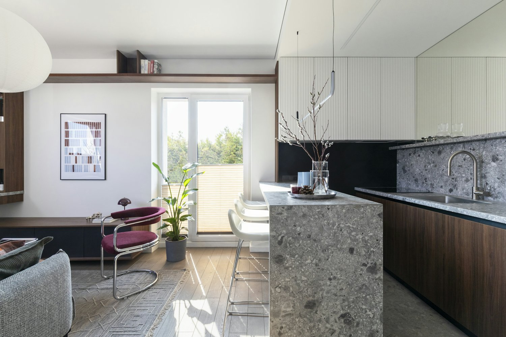
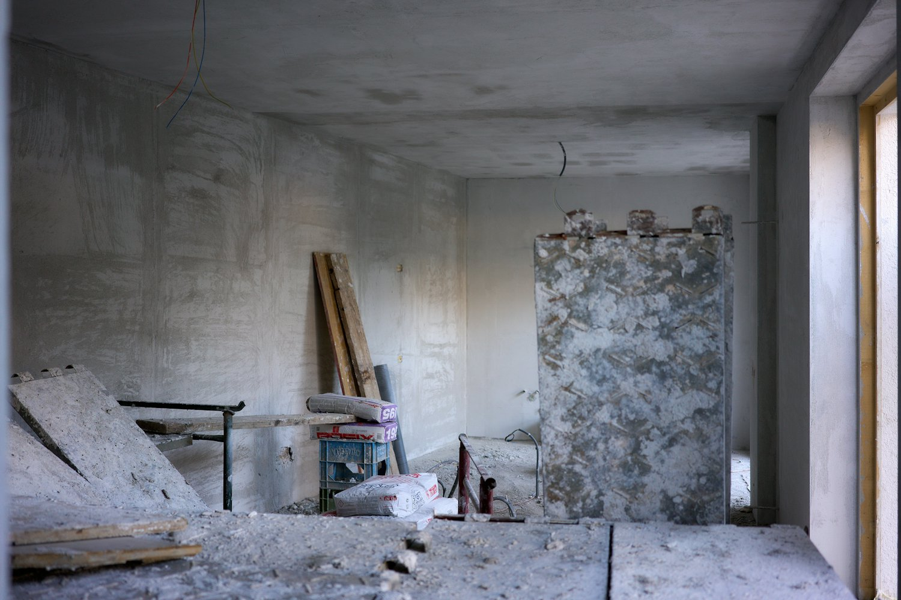
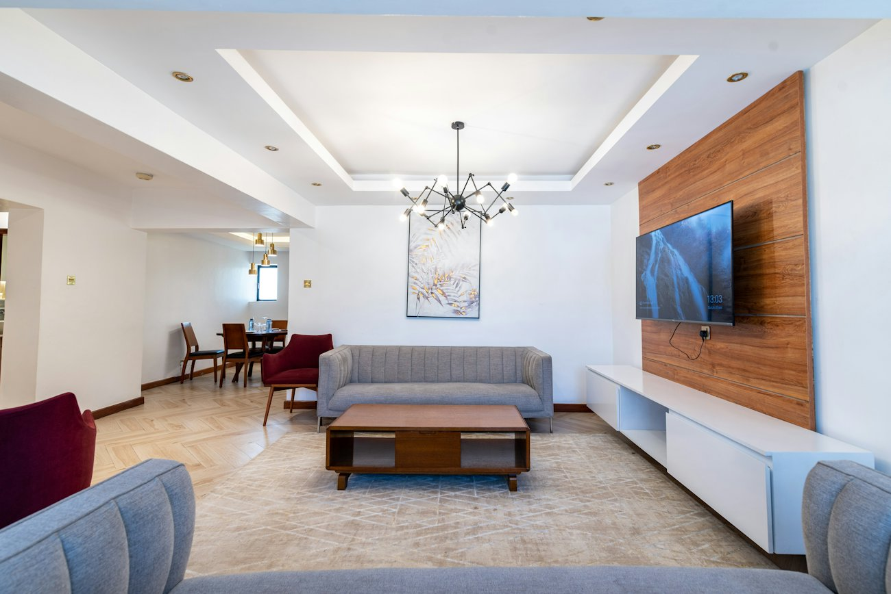

Una ristrutturazione chiavi in mano vista da dentro una sfera di cristallo: i problemi si vedono prima, la casa si consegna nel giorno promesso.
È il cuore di Sfera: ogni fase pianificata, ogni fornitore coordinato, la data di consegna scritta. Scegliete cosa rifare e quanto è grande la casa, e guardate come si muove il calendario.
Calendario di esempio, con durate indicative. Quello vero, con la data garantita, esce dal sopralluogo e dal progetto Sfera.
Il vostro annuncio chiede strategie e canali online e offline, campagne Facebook, lead generation, email, YouTube, landing page, blog e SEO. Ecco come li faremmo lavorare insieme, con un messaggio solo: Sfera.

Il sapere imparato in cantiere da nostro padre, unito alla domotica e ai materiali ecosostenibili. Ogni casa trattata come se, alla fine dei lavori, dovessimo abitarci noi.
Trecento pagine di schede, azioni e riflessioni dentro Sfera: è per questo che la data di consegna si può garantire.


DuranteDopo